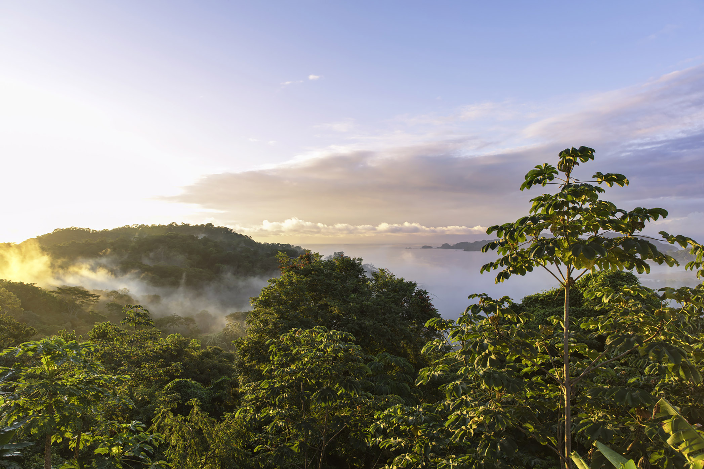

Costa Rica has been on the surf map for forty years and the waves haven't changed, which is the whole point. What has changed is who's standing in them. On any given morning at Playa Negra you'll find retired pro surfers living in the hills, twenty-year-old Instagram instructors with inflatable boards, and local kids who've been surfing since before they could read. All of them have valid claims to the water. Navigating that requires understanding more than just how to paddle.
Choosing the Right Break
Costa Rica's Pacific coast has two distinct seasons and the breaks behave differently in each. The dry season (December to April) brings consistent NW swells to the northern Nicoya Peninsula — Playa Negra near Puerto Viejo de Talamanca on the Caribbean side, and Tamarindo and Santa Teresa further north on the Pacific. The green season (May to November) flips the swell direction, and the south-facing breaks like Pavones come alive.
Pavones, near the Panamanian border, is one of the longest left-hand point breaks in the world. On a good day it runs for over 700 metres. On a bad day — too much swell, too much current, too many people who've seen the same YouTube videos — it is not a beginner wave. Neither is Playa Negra on its overhead days. The mistake tourists make is confusing "warm water" with "easy water." The reef doesn't care about your Instagram grid.
Wave Reading Basics
Before you paddle out anywhere, spend twenty minutes watching. Not photographing. Watching. Look for:
- Where the waves are breaking consistently — this is the "peak"
- Where they're closing out (crashing all at once) versus peeling (breaking progressively left or right)
- The rip currents — water moving sideways or offshore, visible as a darker channel of flatter water
- How other surfers are entering and exiting the water
- The interval between sets — a long interval (12+ seconds) means more powerful, larger waves
If you can't read all five of those things after twenty minutes of watching, you're not ready to paddle out at that break on that day. There will be another day. There will be another wave.
Reef and Conservation Ethics
Playa Negra breaks over black volcanic reef. Pavones breaks over a river-mouth sand bottom, but the surrounding areas have live coral. Both require the same basic awareness: don't drag your fins across the reef, don't stand on coral even in shallow water, don't anchor boats on reef, and don't use chemical sunscreens in the water.
"Reef rule: if it looks sharp, stay off it. Pavones will wait for you."
The reef ecosystem that creates the surf conditions you're there for is the same reef you're potentially damaging. Reef-safe sunscreen is not a marketing term — oxybenzone and octinoxate cause measurable coral bleaching. Bring the right kind. It works.
Logistics: Best Season, Getting There, Accommodation
For beginners targeting Pavones specifically, the best window is June through August — swell is consistent, the crowds are moderate, and the local surf schools are operating fully. Getting to Pavones requires either a long drive from San José (7+ hours on rough roads for the last section) or a domestic flight to Golfito followed by a boat or taxi. Budget a full travel day.
Playa Negra on the Caribbean coast is easier to access — Puerto Viejo de Talamanca is well-served by bus from San José (roughly 4 hours) and has good budget accommodation. Surf rentals are widely available and the beach break is genuinely beginner-friendly on small days.
Crowd Dynamics and Etiquette
The hierarchy in the lineup is unwritten but universally understood. The person closest to the breaking part of the wave (the "peak") has right of way. Don't drop in on someone already riding. Don't paddle around the outside to steal waves from the queue. Don't snake (repeatedly cutting in front of others). If you're a beginner and you take a wave a more experienced surfer had positioned for, apologize and mean it.
At known breaks with local communities, be aware that tourism has complicated relationships with surf spots. Some Costa Rican breaks have experienced conflicts over access and localism. The simplest approach: show respect, be patient, don't demand waves, and appreciate that you are a guest in someone else's place. Pura vida is not a slogan. It's an instruction.
Pavones at Six Feet: When the Wave You Came For Is Too Much Wave
I had been at Pavones for three days when the swell jumped. A Southern Hemisphere groundswell that the forecasting apps had flagged as "building" for the previous week arrived overnight, and by the time I walked down to the point at 6:30 a.m., the waves were easily six feet on the face — some closing out at the top of the point, some peeling in perfect fifty-metre sections that nobody was riding because everyone at the beach was standing on the shore watching.
I paddled out. This was a mistake, and I knew it was a mistake approximately four minutes after entering the water, when a set arrived that I could not paddle over and had to ditch my board and dive through. In the channel afterward, catching my breath, I could see the full length of the break running — clean, powerful, the kind of wave that appears in surf films and nowhere near the level I was at. I caught two waves in ninety minutes. Both were in the reform section below the main break, where the wave had already spent most of its energy. I got out and sat on the beach and watched for two hours and felt, genuinely, like the luckiest spectator on earth.
The lesson is not that you shouldn't paddle out on big days. It's that reading the gap between your current ability and the conditions honestly, without ego, is the foundational skill. The wave will be there tomorrow. The break will be there next season. Your shoulder and your confidence will take longer to recover from a bad wipeout on a reef you're not ready for.

Playa Negra on Small Days: The Case for Patience
Playa Negra on the Caribbean side is a different education entirely from Pavones. The reef is shallower, the wave hollower, and the crowds on small days include a much wider range of abilities than the Pacific point breaks. On a two-foot day, it is a genuinely excellent teaching wave for intermediate surfers — punchy enough to practice take-offs, slow enough to practice trimming and cross-stepping if you're on a longboard.
I spent four days at Playa Negra on a 9'2" log I rented from a shop in Puerto Viejo and those four days changed what I understood about surfing more than the previous year of shortboard sessions at beach breaks in California. The longboard forces a different relationship with the wave. You commit further out on the shoulder, you trim rather than snap, you use the whole board — including that last three feet of nose that most people never stand on. Getting to the nose of a longboard on a clean wave, even briefly, even once, is a specific and unrepeatable joy.
What We Carried
- 7'2" funboard (foam-top for beginners, fiberglass for intermediates) — wide enough for stability, short enough to turn
- 9'2" longboard rental for mellow reef days — ask the rental shop for nose rider, not performance longboard
- Full-length leash (9-foot) — matched to board length; a leash that's too short brings the board back to your face
- Mineral-based sunscreen (zinc oxide, SPF 50+) — reef-safe, non-negotiable in Costa Rica's marine protected areas
- Long-sleeve rashguard (UPF 50+) — tropical sun on water is severe; a rashguard is more reliable than sunscreen alone
- Fin key plus a full set of spare fins — fins come out; the waves don't stop coming
- Board shorts with internal key pocket (or key safe hidden under car) — your rental car key needs to exist when you come in
- Waterproof bag for valuables (drysack, 2L) — do not leave your phone visible on the beach at any Costa Rican break
- Surf wax appropriate to water temperature (warm water wax for 27°C Caribbean; base coat plus topcoat)
- Neoprene booties if venturing to reef sections — Playa Negra's black volcanic reef is sharp and unforgiving